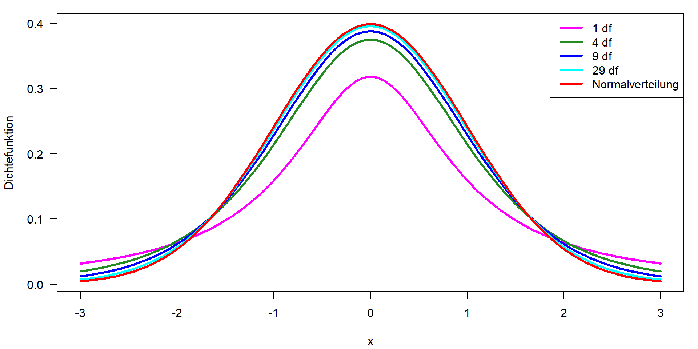

| Zahl | 1 | 2 | 3 | 4 | 5 | 6 | 7 | 8 | 9 |
| Häufigkeit | 0 | 1 | 5 | 5 | 6 | 4 | 12 | 3 | 3 |
04-Wahrscheinlichkeitsverteilungen
Angewandte Statistik – Ein Praxiskurs
Thomas Petzoldt
2025-11-22
Wahrscheinlichkeitsverteilungen
Definition
- eine mathematische Funktion
- Wahrscheinlichkeit des Auftretens verschiedener möglicher Ergebnisse für ein Experiment
\(\rightarrow\) https://en.wikipedia.org/wiki/Probability_distribution
Eigenschaften
- Eine bestimmte Form (Verteilungstyp, eine mathematische Formel)
- Kann durch ihre Parameter beschrieben werden (z. B. Mittelwert \(\mu\) und Standardabweichung \(\sigma\)).
Wahrscheinlichkeitsverteilungen sind eines der Kernkonzepte der Statistik und viele Statistikkurse beginnen mit dem Werfen von Münzen1 oder Würfeln. Wir beginnen mit einem kleinen Experiment im Klassenzimmer.
Was ist deine Lieblingszahl?
In einem Experiment im Hörsaal wurden die Studierenden eines internationalen Kurses nach ihrer Lieblingszahl von 1 bis 9 gefragt.
Die resultierende Verteilung ist:
- empirisch: Daten aus einem Experiment
- diskret: nur diskrete Zahlen (1, 2, 3 …, 9) möglich, keine Brüche
Computersimulationen
Anstelle von realen Experimenten können wir auch simulierte Zufallszahlen verwenden.
- Vorteil: wir können Daten aus Verteilungen mit bekannten Eigenschaften simulieren.
- Herausforderung: etwas abstrakt
Zweck
- ein Gefühl für den Zufall zu bekommen, wie eine Stichprobe nach einer bestimmten „Theorie“ aussehen kann
- statistische Methoden erforschen und testen und das Verständnis schulen
- ein Werkzeug für die Versuchsplanung
- Anwendung und Aussagekraft einer Analyse im Vorfeld testen
\(\rightarrow\) Simulation: ein wichtiges Instrument für die Entwicklung und das Verständnis statistischer Methoden!
Kontinuierliche Gleichverteilung \(\mathbf{U}(0, 1)\)
- gleiche Wahrscheinlichkeit des Auftretens in einem bestimmten Intervall
- z.B. \([0, 1]\)
- in R:
runif, random, uniform
[1] 0.3878149 0.1474093 0.1270229 0.1482189 0.2070467 0.9665356 0.2667545
[8] 0.5472155 0.8764302 0.8463079
- Klassenbildung (Binning): Einteilung der Werte in Klassen
Dichtefunktion von \(\mathbf{U}(x_{min}, x_{max})\)
- Dichte \(f(X)\), manchmal abgekürzt als „pdf“ (probability density function):
\[ f(x) = \begin{cases} \frac{1}{x_{max}-x_{min}} & \text{für } x \in [x_{min},x_{max}] \\ 0 & \text{sonst} \end{cases} \]
- Fläche unter der Kurve (d. h. das Integral) = 1,0
- 100% der Ereignisse liegen zwischen \(-\infty\) und \(+\infty\)
und für \(\mathbf{U}(x_{min}, x_{max})\) im Intervall \([x_{min}, y_{max}]\)
Kumulative Verteilungsfunktion von \(\mathbf{U}(x_{min}, x_{max})\)
Die cdf (cumulative distribution function) ist das Integral der Dichtefunktion:
\[ F(x) =\int_{-\infty}^{x} f(x) dx \] Die Gesamtfläche (Gesamtwahrscheinlichkeit) ist \(1.0\):
\[ F(x) =\int_{-\infty}^{+\infty} f(x) dx = 1 \]
Für die Verteilungsfunktion der Gleichverteilung gilt somit:
\[ F(x) = \begin{cases} 0 & \text{für } x < x_{min} \\ \frac{x-x_{min}}{x_{max}-x_{min}} & \text{für } x \in [x_{min},x_{max}] \\ 1 & \text{für } x > x_{max} \end{cases} \]
Quantilfunktion
… die Umkehrung der kumulativen Verteilungsfunktion.
Kumulative Verteilungsfunktion
Quantilsfunktion
Beispiel: In welchem Bereich kann man 95% einer Gleichverteilung \(\mathbf{U}(40,60)\) finden?
Zusammenfassung: Gleichverteilung
Die Normalverteilung
Die Normalverteilung \(\mathbf{N}(\mu, \sigma)\)
- von großer theoretischer Bedeutung aufgrund des zentralen Grenzwertsatzes (ZGWS / central limit theorem CLT)
- ergibt sich aus der Addition einer großen Anzahl von Zufallswerten gleicher Größenordnung.
Die Dichtefunktion der Normalverteilung ist eine mathematische Schönheit.
\[ f(x) = \frac{1}{\sigma\sqrt{2\pi}} \, \mathrm{e}^{-\frac{(x-\mu)^2}{2 \sigma^2}} \]

C.F. Gauß, Gauß-Kurve und Formel auf einer deutschen DM-Banknote von 1991–2001 (Wikipedia, CC0)
Der zentrale Grenzwertsatz (CLT)
Die Summe einer großen Anzahl \(n\) unabhängiger und identisch verteilter Zufallswerte konvergiert gegen eine Normalverteilung, unabhängig vom Typ der ursprünglichen Verteilung.
Ein Simulationsexperiment
- Erstelle eine Matrix mit 100 Zeilen und 25 Spalten von gleichverteilten Zufallszahlen
- Berechne die Zeilensummen
\(\rightarrow\) Zeilensummen sind annähernd normalverteilt
Zufallszahlen und Dichtefunktion
Dichte und Quantile der Standardnormalverteilung
- Theoretisch liegen 50% der Werte unter und 50% über dem Mittelwert
- 95% liegen ungefähr zwischen \(\pm 2 \sigma\)
Dichte und Quantile der Standardnormalverteilung

Kumulative Verteilungsfunktion und Quantilfunktion
| Quantil | 1 | 1.64 | 1.96 | 2.0 | 2.33 | 2.57 | 3 | \(\mu \pm z\cdot \sigma\) |
|---|---|---|---|---|---|---|---|---|
| einseitig | 0.95 | 0.975 | 0.977 | 0.99 | 0.995 | 0.9986 | \(1-\alpha\) | |
| zweiseitig | 0.68 | 0.90 | 0.95 | 0.955 | 0.98 | 0.99 | 0.997 | \(1-\alpha/2\) |
Standardnormalverteilung, Skalierung und Verschiebung
- \(\mu\) ist der Verschiebungsparameter, der die gesamte glockenförmige Kurve entlang der \(x\)-Achse verschiebt.
- \(\sigma\) ist der Skalierungsparameter, der die Kurve in Richtung \(x\) streckt oder staucht.
Standardisierung (\(z\)-Transformation)
Jede Normalverteilung kann skaliert und verschoben werden, um eine Standardnormalverteilung mit \(\mu=0, \sigma=1\) zu bilden.
Normalverteilung
\[ f(x) = \frac{1}{\sigma\sqrt{2\pi}} \, \mathrm{e}^{-\frac{(x-\mu)^2}{2 \sigma^2}} \]
\[
z = \frac{x-\mu}{\sigma}
\] \(\longrightarrow\) \(\longrightarrow\) \(\longrightarrow\)
Standardnormalverteilung
\[ f(x) = \frac{1}{\sqrt{2\pi}} \, \mathrm{e}^{-\frac{1}{2}x^2} \]
t-Verteilung \(\mathbf{t}(x, df)\)
- zusätzlicher Parameter „Freiheitsgrade“ (df)
- wird für Konfidenzintervalle und statistische Tests verwendet
- konvergiert gegen Normalverteilung für \(df \rightarrow \infty\)
Abhängigkeit des t-Wertes von der Anzahl der df
| df | 1.00 | 4.00 | 9.00 | 19.00 | 29.00 | 99.00 | 999.00 |
| t | 12.71 | 2.78 | 2.26 | 2.09 | 2.05 | 1.98 | 1.96 |
Logarithmische Normalverteilung (Lognormal)
- Viele Prozesse in der Natur folgen nicht einer Normalverteilung.
- begrenzt durch Null auf der linken Seite
- große Extremwerte auf der rechten Seite
Beispiele: Abfluss von Flüssen, Nährstoffkonzentrationen, Algenbiomasse in einem See
Elternverteilung der Lognormalverteilung
- Logarithmus von Werten einer Lognormalverteilung \(\rightarrow\) Eltern-Normalverteilung.
- Die Lognormalverteilung wird durch die Parameter der log-transformierten Daten \(\bar{x}_L\) und \(s_L\) beschrieben
- der Antilog von \(\bar{x}_L\) ist das geometrische Mittel
Binomialverteilung
- Anzahl der erfolgreichen Versuche aus \(n\) Gesamtversuchen mit Erfolgswahrscheinlichkeit \(p\).
- Wie viele 6en mit Wahrscheinlichkeit \(1/6\) in 3 Versuchen?
- Medizin, Toxikologie, Vergleich von Prozentzahlen
- Ähnlich, aber ohne zurücklegen: Hypergeometrische Verteilung im Lotto
Poisson-Verteilung

- Verteilung von seltenen Ereignissen, eine diskrete Verteilung
- Mittelwert und Varianz sind gleich (\(\mu = \sigma^2\)), daraus ergibt sich der Parameter „lambda“ (\(\lambda\))
- Beispiele: Bakterienzählung auf einem Raster, Warteschlangen, Ausfallmodelle
Quasi-Poisson, wenn \(\mu \neq \sigma^2\)
- Wenn \(s^2 > \bar{x}\): Überdispersion
- wenn \(s^2 < \bar{x}\): Unterdispersion
Konfidenzintervall
– hängt nur von \(\lambda\) bzw. der Anzahl der gezählten Einheiten (\(k\)) ab
Typischer Fehler bei einer Zellzählung: 95% Konfidenzintervall
| Anzahl | 2 | 3 | 5 | 10 | 50 | 100 | 200 | 400 | 1000 |
| von | 0 | 1 | 2 | 5 | 37 | 81 | 173 | 362 | 939 |
| bis | 7 | 9 | 12 | 18 | 66 | 122 | 230 | 441 | 1064 |
Konfidenzintervalle
Zur Erinnerung: Der zentrale Grenzwertsatz (ZGWS)
Die Summen einer großen Anzahl \(n\) unabhängiger und identisch verteilter Zufallswerte konvergieren gegen eine Normalverteilung, unabhängig vom Typ der ursprünglichen Verteilung.
- Wir können Methoden für eine Normalverteilung auch bei Abweichungen von der NV anwenden:
- wenn wir einen großen Datensatz haben
- wenn die ursprüngliche Verteilung nicht „zu schief“ ist
- Die erforderliche Zahl \(n\) hängt von der Schiefe der ursprünglichen Verteilung ab.
Grund: Methoden wie t-Test oder ANOVA basieren auf Mittelwerten.
Konfidenzintervalle des Mittelwerts
Standardfehler
\[ s_{\bar{x}} = \frac{s}{\sqrt{n}} \]
- Die Variabilität des Mittelwerts halbiert sich, wenn wir den Stichprobenumfang vervierfachen (\(2^2\)).
Schätzung des 95%-Konfidenzintervalls:
\[ CI_{95\%} = \bigg(\bar{x} - z_{0.975} \cdot \frac{s}{\sqrt{n}}, \bar{x} + z_{0.975} \cdot \frac{s}{\sqrt{n}}\bigg) \]
mit \(z_{1-\alpha/2} = z_{0.975} =\) \(1.96\).
\(\rightarrow\) \(2\sigma\) Regel
- Intervall, in dem der wahre Mittelwert mit 95%iger Wahrscheinlichkeit gefunden wird
Unterschied zwischen Stichprobe und Konfidenzintervall
Vorhersageintervall: Charakterisiert die Verteilung der Daten anhand der Parameter der Stichprobe (z. B. Mittelwert, Standardabweichung). Es schätzt den Bereich, in den eine einzelne zukünftige Beobachtung wahrscheinlich fallen wird.
Standardabweichung \(s_x\) misst die Variabilität der ursprünglichen Daten
rekonstruiert die ursprüngliche Verteilung, wenn ihr Typ bekannt ist (z. B. normal, lognormal)
Konfidenzintervall: charakterisiert die Genauigkeit eines statistischen Parameters, basierend auf seinem Standardfehler
Schätzt anhand von \(\bar{x}\) und \(s_\bar{x}\) das Intervall, in dem \(\mu\) mit einer bestimmten Wahrscheinlichkeit gefunden wird
weniger abhängig von der ursprünglichen Verteilung der Daten aufgrund des ZGWS
Verwendung der t-Verteilung für kleine Stichproben
\[ CI_{95\%} = \bigg(\bar{x} - t_{0.975, n-1} \cdot \frac{s}{\sqrt{n}}, \bar{x} + t_{0.975, n-1} \cdot \frac{s}{\sqrt{n}}\bigg) \]
- notwendig für kleine Stichproben: \(n\lessapprox 30\), \(n-1\) Freiheitsgrade
- kann selbstverständlich auch für \(n > 30\) verwendet werden
- \(t\)-Quantil kann in Tabellen gefunden oder mit der Funktion
qt()in R berechnet werden.
Beispiel mit \(\mu=50\) und \(\sigma=10\):
set.seed(123)
n <- 10
x <- rnorm(n, 50, 10)
m <- mean(x); s <- sd(x)
se <- s/sqrt(n)
# lower and upper confidence limits
m + qt(c(0.025, 0.975), n-1) * se[1] 43.92330 57.56922\(\rightarrow\) der wahre Mittelwert (\(\mu\)=50) ist im Intervall CI = (43.9, 57.6).
Ausreißer
- Extrem große oder extrem kleine Werte werden oft als „Ausreißer“ bezeichnet.
- Potenzielle Ausreißer können aber auch „Extremwerte“ aus einer schiefen Verteilung sein. Sie auszuschließen, kann wissenschaftliches Fehlverhalten sein.
- Ein „echter“ Ausreißer ist ein Wert, der nicht aus der zu analysierenden Population stammt, z. B. ein schwerwiegender Messfehler, wenn jemand vergessen hat, eine Chemikalie in einer Analyse hinzuzufügen.
- Er kann aber auch etwas Interessantes sein, z. B. das Ergebnis eines neuen Phänomens.
\(\Rightarrow\) Es kann falsch sein, Werte auszuschließen, nur weil sie „zu groß“ oder „zu klein“ sind.
\(\rightarrow\) Versuche, den Grund zu finden, warum Werte extrem sind!
\(4 \sigma\)-Regel
- prüft, ob ein Wert mehr als 4 Standardabweichungen vom Mittelwert entfernt ist.
- Stichprobengröße sollte \(n \ge 10\) sein, \(\bar{x}\) und \(s\) werden ohne den potentiellen Ausreißer berechnet.
- Ähnliche „Faustregeln“ sind in Statistik-Lehrbüchern zu finden.
Ausreißertest für lineare Modelle mit Bonferroni-Korrektur
- Für lineare Modelle und GLMs können wir den Bonferroni-Ausreißertest aus dem Paket car verwenden.
library(car)
x <- c(rnorm(20), 12) # der 21. Wert (=12) ist ein Ausreißer
outlierTest(lm(x ~ 1)) # x ~ 1 ist das "Nullmodell" rstudent unadjusted p-value Bonferroni p
21 11.66351 4.1822e-10 8.7826e-09\(\rightarrow\) Der 21. Wert wird als Ausreißer identifiziert.
Alternative zu Ausreißertests
- Verwendung robuster Parameter und Methoden,
- z.B. Median oder getrimmter Mittelwert anstelle des arithmetischen Mittels,
- robuste lineare Regression „rlm“ anstelle von „lm”
- Rangbasierte Methoden wie die Spearman-Korrelation
- Wichtig Ausreißer können in einer Analyse weggelassen werden, aber die Anzahl und das Ausmaß der Ausreißer müssen erwähnt werden!
Extremwerte in Boxplots
- Extremwerte außerhalb der Whiskers, wenn sie mehr als das 1,5-fache der Breite der Interquartilsbox von den Boxgrenzen entfernt sind.
- Manchmal auch „Ausreißer“ genannt.
- Ich bevorzuge den Begriff „Extremwert“, da es sich um regelmäßige Beobachtungen aus einer schiefen oder einer ‘heavy tailed’ Verteilung handeln kann.
Beispiel
Abflussdaten der Elbe in Dresden in \(\mathrm m^3 s^{-1}\), Datenquelle: Bundesanstalt für Gewässerkunde (BFG), siehe Nutzungshinweise.
- Links: große Anzahl von Extremwerten, sind das Ausreißer?
- Mitte: Verteilung ist rechtsschief.
- Rechts: Transformation (3-parametrische Lognormalverteilung)
\(\rightarrow\) symmetrische Verteilung, keine Ausreißer!